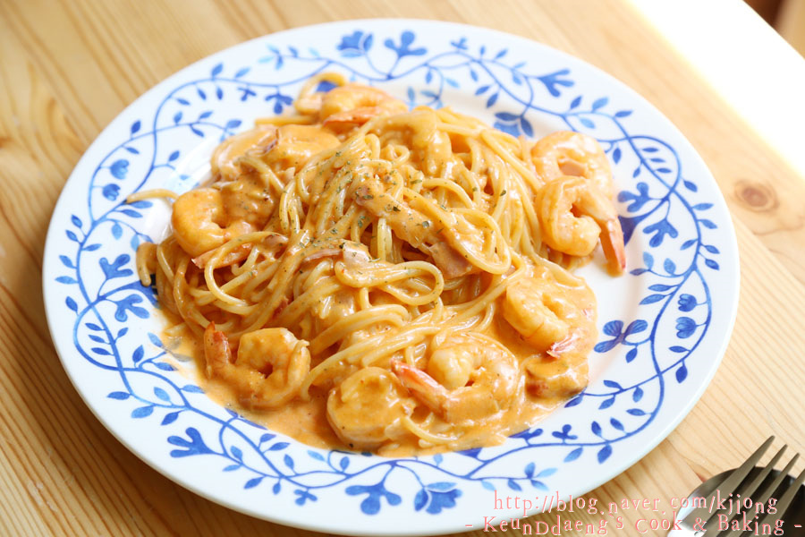
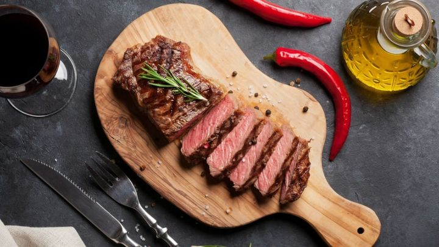

재료
도우, 틈메이뤄 쒀쓰, 취이zㅡ, 바zㅣㄹ
조리법
- 도우를 준비한다.
- 틈메이뤄 쒀쓰를 도우에 넓게 펴바른다.
- 취이zㅡ를 대충 잘라 곳곳에 배치한다.
- 바zㅣㄹ을 올린다.
- 화덕에 돌려가며 굽는다.
- 취향에 따라 바zㅣㄹ을 추가로 얹는다.

로제
로제
파스타
재료
시판 로제 소스, 양파 1/2개, 새우, 파스타 면, 올리브 오일
조리법
- 파스타 면을 삶는다. 이와 동시에 올리브 오일을 팬에 두르고 달군다.
- 팬이 달궈지면 양파를 넣고 볶는다.
- 양파가 투명해지면 새우를 넣고 볶는다.
- 새우의 색이 바뀌기 시작할 때 이마트에서 사온 로제소스를 들이 붓는다.
- 면을 꺼내 물을 빼고 팬에 넣는다.
- 소스와 잘 섞여지면 접시에 담아 준비한다.
